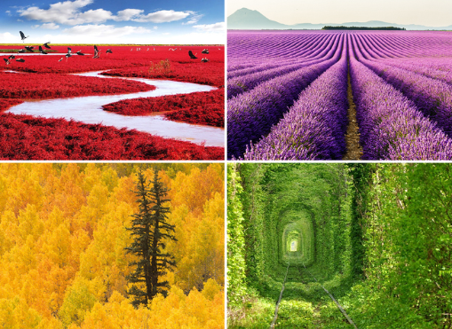
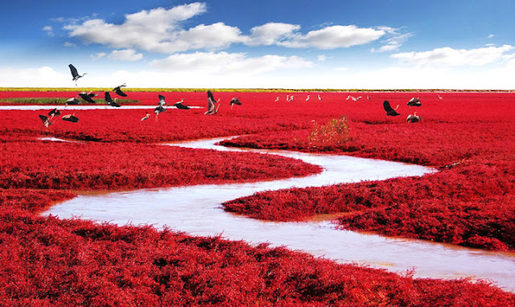
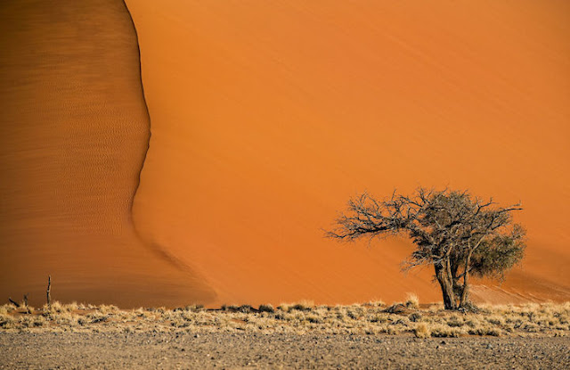
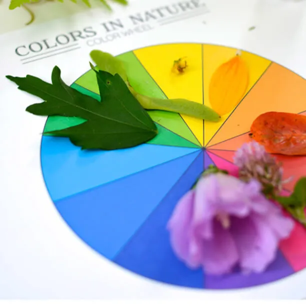

CORES NA
NATUREZA
Explore o universo das cores, suas propriedades físicas, percepção visual e aplicações na arte, design e tecnologia.
Explore o universo das cores, suas propriedades físicas, percepção visual e aplicações na arte, design e tecnologia.

Hebreus 11:3: "Pela fé, entendemos que foi o universo formado pela palavra de
Deus..."
As cores na natureza são resultado de fenômenos físicos, químicos e biológicos. Além de tornar o
planeta visualmente belo, elas desempenham funções essenciais para a sobrevivência dos seres
vivos. O estudo das cores ajuda cientistas a compreender melhor a evolução, a comunicação animal
e até desenvolver novas tecnologias inspiradas na natureza.
A Natureza sempre nos surpreende com sua beleza representada em inúmeras formas, cores e
texturas. Mas para mim, a maior forma de expressão da Natureza está nas cores. Nas cores das
vegetações, das flores, das águas, das rochas, dos animais, de toda forma de vida que existe
neste planeta iluminado.
Basta uma pequena caminhada em um bosque, ou uma voltinha rápida por uma praça arborizada, para nos encantarmos com o colorido de flores, pássaros e insetos. Mas, bem mais do que enfeitar os ambientes, a maioria das cores de plantas e animais têm papel muito mais importante para esses seres, como sobrevivência e reprodução. Flores e frutos, por exemplo, podem ter cores vibrantes para atrair animais polinizadores e dispersores de sementes, como abelhas e pássaros. Curiosamente, nos animais as cores vibrantes podem ter papéis opostos: atração ou repulsão. Enquanto o macho de uma ave usa cores para dizer a uma fêmea “veja como sou bonito”, um besouro colorido pode estar dizendo a seus possíveis predadores “afaste-se, sou venenoso e tenho gosto ruim”.


Funções das cores na natureza
Camuflagem. Ajuda os seres vivos a se esconderem de predadores.
Exemplo:
Camaleões.
Insetos-folha.
Polvos.
Flores coloridas atraem abelhas e borboletas.
Pássaros exibem plumagens vibrantes para reprodução.
Advertência.
Cores fortes podem indicar perigo ou veneno.
Sapos venenosos.
Cobras coral.
Algumas lagartas.
Muitas frutas mudam do verde para vermelho ou laranja quando amadurecem. Para quem tem daltonismo vermelho-verde, essa diferença pode quase desaparecer, tornando mais difícil perceber se a fruta está pronta.
Enquanto humanos normalmente possuem três tipos de células para detectar cores, aves e alguns insetos têm quatro ou mais. Abelhas, por exemplo, conseguem ver luz ultravioleta presente nas flores — padrões invisíveis para nós.
Como elas dependem menos da cor e mais de contraste, forma e textura, alguns tipos de camuflagem usados por animais na natureza podem acabar ficando mais evidentes.,
CIRCULO CROMÁTICO NATURAL
Para melhorar sua percepção das cores na natureza, separe papel, cola e tesoura.
Com apoio de materiais e cores da sua escolha crie um circulo cromático com no minimo 6 cores.
Depois, busque na NATUREZA folhas, frutos ou flores que possam se encaixar na paleta que você criou.
